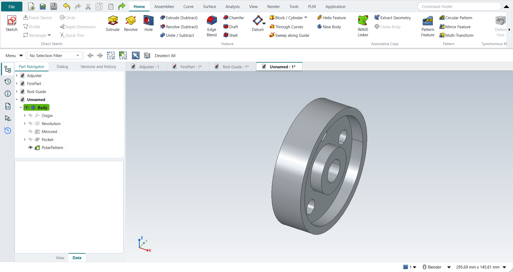
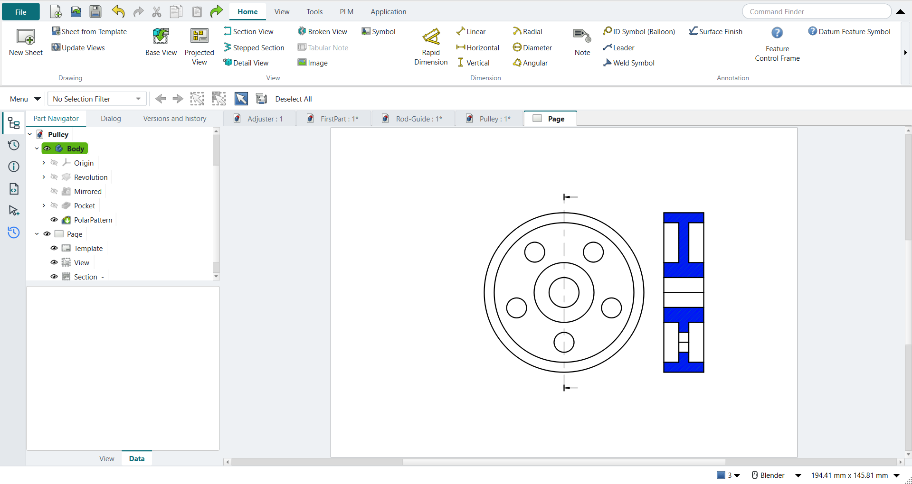

Tutorial D: Pulley with drawing
| Book |
Shih, Parametric Modeling with Siemens NX, ch. 11 |
| You learn |
Revolve, Mirror Feature, a pattern leader hole, Circular Pattern, Base View, Section View |
| Sizes |
Ø101.6 × 25.4 mm, hub Ø38.1, bore Ø19.05, web 6.35, five Ø12.7 holes on a Ø63.5 pitch circle (the book’s Ø4.00 × 1.00 in and so on); NotebookLM’s reading of the figures |

In short
-
Revolve with nothing selected: sketch the half section, Ctrl+Q, revolve.
-
Select the feature, then Mirror Feature.
-
One hole as the pattern leader, then Circular Pattern with 5 occurrences.
-
Ctrl+Shift+D: New Sheet, Base View (right view), Section View through the centre.

Step by step
| # | In the book (NX) | In FreeCAD NX-Style | Result | Notes |
|---|---|---|---|---|
D1 |
File > New (Ctrl+N), Model template |
Ctrl+N |
same |
|
D2 |
Revolve, nothing selected |
ribbon 'Home › Feature > Revolve' |
same |
|
D3 |
Pick the XY plane of the datum CSYS |
plane row + MB2 |
same |
XY-plane (Base plane) |
D4 |
Profile (Z): closed half cross-section, MB2 |
Z key + 9 MB1 clicks + MB2 |
same |
tool True; 8 curves; ended True |
D5 |
Rapid Dimension: profile sizes |
values applied |
differs |
same tool; no dynamic dimensions |
D6 |
Specify Vector = X axis through the origin, 0..360°, OK |
axis 'Base X-axis', MB2 = OK |
same |
volume 51079.3 mm^3, expected 51079.3; 1 solid(s); NX picks the axis in the graphics window, FreeCAD lists it in the dialog |
D7 |
Mirror Feature: select the revolved feature, MB2 to proceed |
feature selected + ribbon 'Home › Pattern > Mirror Feature' |
differs |
selecting first and then starting Mirror Feature replaces NX’s 'select, then MB2' |
D8 |
Plane = the back face (on the YZ plane), OK; Unite |
plane 'Base YZ-plane', MB2 = OK |
same |
volume 102158.6 mm^3, expected 102158.6; 1 solid(s); inside a Body the mirror unites by itself, so NX’s separate Unite step is not needed |
D9 |
Pattern leader: Extrude on the front face of the web, Subtract |
select face + ribbon 'Home › Feature > Extrude (Subtract)' |
differs |
subtracting extrude is its own button in FreeCAD |
D10 |
Circle Ø0.50 on the 2.50 pitch circle |
O key + MB1 clicks + MB2; values applied |
same |
tool True; 1 curves |
D11 |
Reverse Direction, End = Through All, OK |
'Through all', MB2 = OK |
same |
volume 101354.2 mm^3, expected 101354.2; 1 solid(s); no Reverse needed in FreeCAD |
D12 |
Pattern Feature, Layout = Circular |
leader selected + ribbon 'Home › Pattern > Circular Pattern' |
differs |
NX has one Pattern Feature with a Layout list; FreeCAD has separate linear and circular buttons |
D13 |
Axis X, Count and Span: 5 over 360°, OK |
axis 'Base X-axis', 'spinOccurrences' = 5, MB2 = OK |
same |
volume 98136.6 mm^3, expected 98136.6; 1 solid(s) |
D14 |
The finished part is shown in the graphics window |
render of the graphics window |
same |
12.6% of the view shows the part |
D15 |
File > Drafting (Ctrl+Shift+D) |
Ctrl+Shift+D |
same |
TechDrawWorkbench |
D16 |
New sheet, A-size, 1:1 |
ribbon 'Home › Drawing > New Sheet' |
differs |
FreeCAD’s default template Default_Template_A4_Landscape.svg; an ANSI A sheet is one template choice away (Sheet from Template) |
D17 |
Base View: Right view of the pulley |
body selected + ribbon 'Home › View > Base View'; dialog closed with MB2 |
same |
1 view(s) on the sheet; direction set to Right (+X) |
D18 |
Add a projected view, select it, Delete key |
Base View again + Delete key |
differs |
views 2 → 1. NX drags projected views off the base view; FreeCAD’s Projected View is a projection group, so a second Base View stood in for it |
D19 |
Section View through the centre of the base view |
base view selected + ribbon 'Home › View > Section View', direction 'pbLeft', MB2 = OK |
same |
1 section view(s), 42 visible edges |
D20 |
Drag the section to the right of the base view, MB1 to place |
X/Y of the section set |
differs |
FreeCAD places the section on top of the base view; it is moved afterwards (placed at x = 224.7 mm, base at 148.5 mm) |
| Result | Means |
|---|---|
same |
The book’s NX steps work as written. |
differs |
It works, but the FreeCAD way is different; the notes say how. |
limit |
The book’s way fails in FreeCAD itself; a workaround follows in the next steps. |
missing |
FreeCAD has no such function; a stand-in follows. |
skipped |
Not replayed; the notes give the reason. |
FAILED |
Did not work. |
What differs from NX
-
Mirror Feature: select the feature first, then start the command.
-
NX’s one Pattern Feature with a Layout list is two buttons here; the axis is chosen in the dialog.
-
Projected View is a projection group: a second Base View stands in for a view dragged off the base view.
-
A new section view lands on its base view and is moved afterwards.